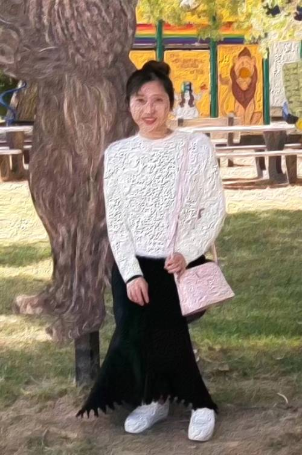
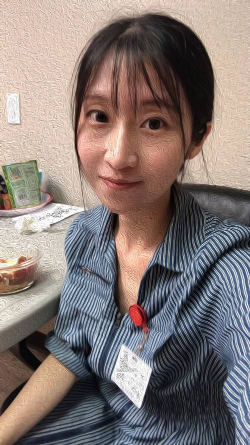
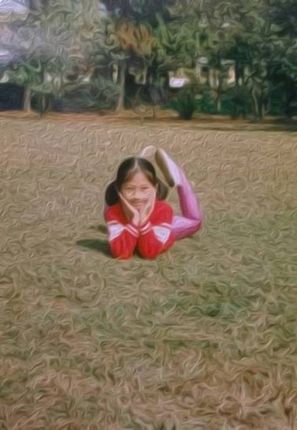
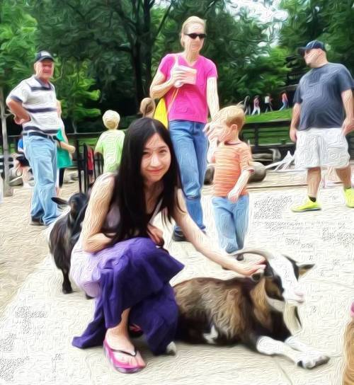
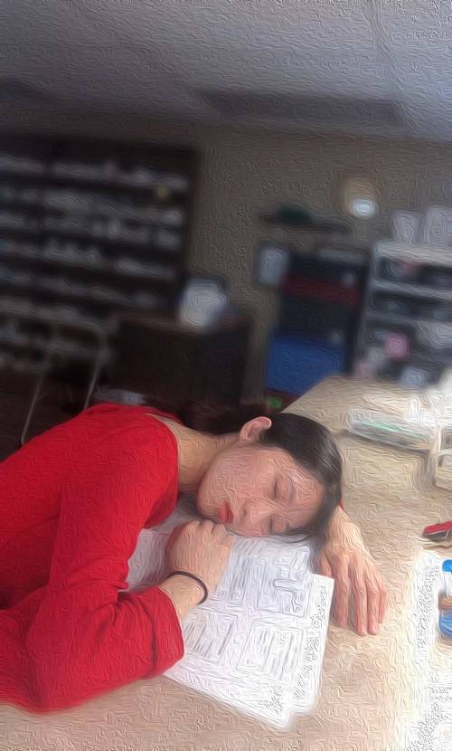
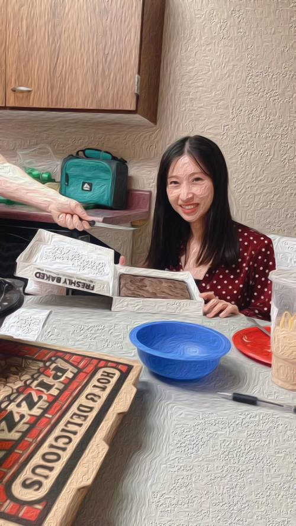
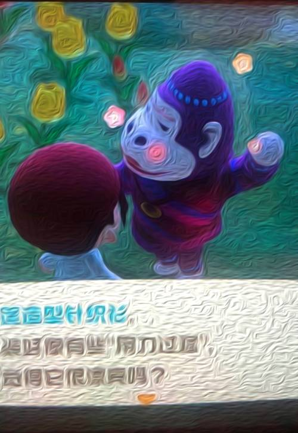

快下班的娇娇，2020
- 日期
- 2020年5月28日
- 地点
- 堪萨斯某药房
- 作者
- 娇娇
- 点评
- 马上下班时的作品，作者构图清晰，人物居左，右侧展示了药房药柜，表情捕捉得惟妙惟肖，令人叹服
昔日的帅哥，2016
- 日期
- 2016年3月21日
- 地点
- 弗吉尼亚阿灵顿
- 作者
- 毛毛
- 点评
- 阳春三月，万物复苏，不羁的秀发，作者充满自信的作品

蒙娜丽娇，2019
- 日期
- 2019年11月？
- 地点
- 堪萨斯利伯缇
- 作者
- 娇娇妈妈
- 点评
- 艺术派文艺复兴巅峰时期的手法，朦胧的姿态很完美地展现了少女害羞又得体的美，可以和达芬奇手下的蒙娜丽莎媲美
初出茅庐，2018
- 日期
- 2018年某月？
- 地点
- 德州某地药房
- 作者
- 某某
- 点评
- 淡色系的色彩搭配，和人物刚出校园时的意气奋发形成强烈的对比，体现了作者匠心独运。

减肥餐，2020
- 日期
- 2020年5月4日
- 地点
- 堪萨斯某地药房
- 作者
- 娇娇
- 点评
- 看似很随意的一幅作品，减肥餐被刻意地放到了构图的最边缘，暗示了人物当时不得已而为之的心情。
毕业，2018
- 日期
- 2018年5月
- 地点
- 佛罗里达Nova大学
- 作者
- 娇娇的同学
- 点评
- 作者构图别有用心，将人物放在远处跃起的鲨鱼雕像下，代表着鲤鱼跃龙门的美好的祝福。
戴面膜的少女，2020
- 日期
- 2020年2月23日
- 地点
- 新泽西某速8旅馆
- 作者
- 娇娇
- 点评
- 参照了《戴珍珠耳环的少女》，美容面膜，仿佛神秘面纱的掩盖下，将少女眉目传情体现地淋漓尽致，少女此刻似乎走出了画中。

童真，1993-1995？
- 日期
- 1993-1995年？
- 地点
- 江西南昌人民公园
- 作者
- 娇娇妈妈？爸爸？
- 点评
- 年代久远的一幅作品，有一种历史的沧桑感，但也很好地描绘出了小女孩的童真顽皮的一面。

摸山羊的少女，2013
- 日期
- 2013年夏天
- 地点
- 内华达动物园
- 作者
- ？？
- 点评
- 模拟了《抱银鼠的女子》，印象派画风，通过画能甚至能感觉到山羊很惬意。少女的目光也是柔情似水。

睡美娇，2019
- 日期
- 2019年10月1日
- 地点
- 堪萨斯某药店
- 作者
- 娇娇的助手？
- 点评
- 神似睡美人，作者将少女挑灯苦读万卷书的姿态活灵活现地展现了出来。正所谓学海无涯苦作舟，少女伏案缺枕头。

被胁迫的少女，2020
- 日期
- 2020年5月28日
- 地点
- 堪萨斯某药房
- 作者
- 娇娇助手
- 点评
- 面对利刃的胁迫，画中少女临危不惧而面带危险的神态被描绘地入木三分，给观者以强烈的视觉反差冲击效果。作为吃货，识时务者为俊杰，吃！

吴紫眉，2020
- 日期
- 2020年5月2日
- 地点
- switch动物森友会
- 作者
- 娇娇
- 点评
- 吴家有女初长成，
紫眉窈窈下凡尘。
回眸一笑百媚生，
六宫粉黛无颜色。